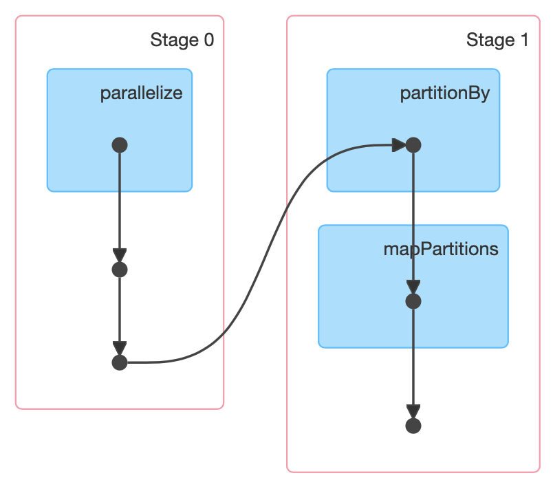
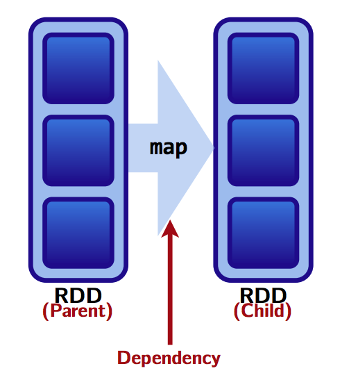
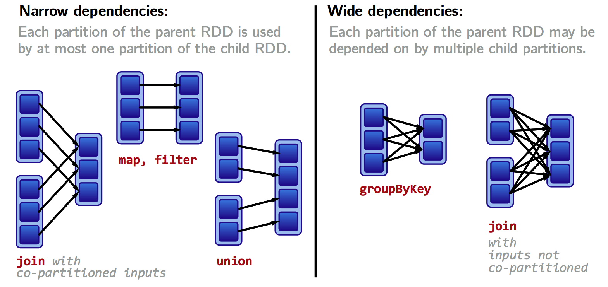
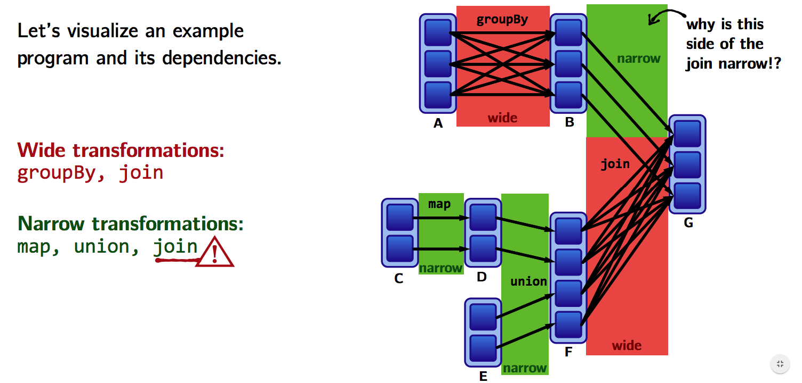
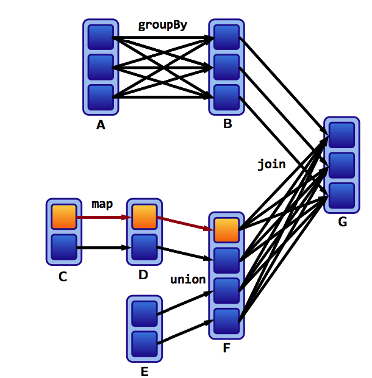
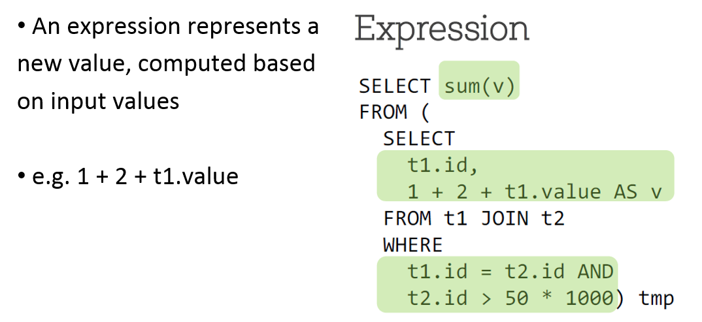
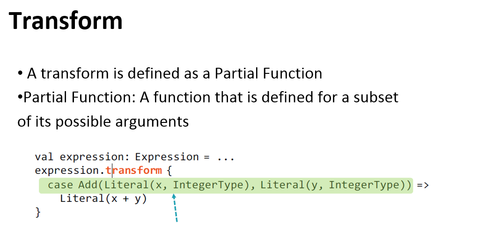
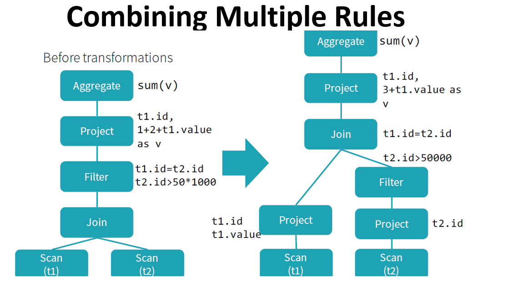

Spark deeper dive
Technologies Big Data Master MIDS/MFA/LOGOIS
2025-01-17
A deeper dive into Spark
Shuffles
Shuffles
What happens when we do a reduceByKey on a RDD?
>>> rdd = sc.parallelize([("a", 1), ("b", 1), ("a", 1)])
>>> rdd.reduceByKey(lambda a, b: a + b).collect()Let’s have a look at the Spark UI available at :
http://localhost:4040/jobs/]
Shuffles

Spark has to move data from one node to another to be “grouped” with its “key”
Doing this is called shuffling. It is never called directly, it happens behind the curtains for some other functions as
reduceByKeyabove.This might be very expensive because of latency
Shuffles
reduceByKeyresults in one key-value pair per keyThis single key-value pair cannot span across multiple workers.
Example
>>> from collections import namedtuple
>>> columns = ["client_id", "destination", "price"]
>>> CFFPurchase = namedtuple("CFFPurchase", columns)
>>> CFFPurchase(100, "Geneva", 22.25)
CFFPurchase(client_id=100, destination='Geneva', price=22.25)Goal: calculate how many trips and how much money was spent by each client
Example (cont.)
>>> purchases = [
CFFPurchase(100, "Geneva", 22.25),
CFFPurchase(100, "Zurich", 42.10),
CFFPurchase(100, "Fribourg", 12.40),
CFFPurchase(101, "St.Gallen", 8.20),
CFFPurchase(101, "Lucerne", 31.60),
CFFPurchase(100, "Basel", 16.20)
]
>>> purchases = sc.parallelize(purchases)
>>> purchases.collect()
[CFFPurchase(client_id=100, destination='Geneva', price=22.25),
CFFPurchase(client_id=100, destination='Zurich', price=42.1),
CFFPurchase(client_id=100, destination='Fribourg', price=12.4),
CFFPurchase(client_id=101, destination='St.Gallen', price=8.2),
CFFPurchase(client_id=101, destination='Lucerne', price=31.6),
CFFPurchase(client_id=100, destination='Basel', price=16.2)]Example (cont.)
>>> purchases_per_client = (purchases
# Pair RDD
.map(lambda p: (p.client_id, p.price))
# RDD[p.customerId, List[p.price]]
.groupByKey()
.map(lambda p: (p[0], (len(p[1]), sum(p[1]))))
.collect()
)
>>> purchases_per_client
[(100, (4, 92.95)), (101, (2, 39.8))]How would this looks on a cluster? (imagine that the dataset has millions of purchases)
Shuffles
- Lets say we have 3 worker nodes and our data is evenly distributed on it, so the operations above look like this:
This shuffling is very expensive because of latency
Can we do a better job?
Shuffles
Perhaps we can reduce before we shuffle in order to greatly reduce the amount of data sent over network. We use reduceByKey.
>>> purchases_per_client = (purchases
.map(lambda p: (p.client_id, (1, p.price)))
.reduceByKey(lambda v1, v2: (v1[0] + v2[0], v1[1] + v2[1]))
.collect()
)This looks like on the cluster:

Shuffles
groupByKey(left) VSreduceByKey(right) :
- With
reduceByKeywe shuffle considerably less amount of data
Benefits of this approach:
- by reducing the data first, the amount of data sent during the shuffle is greatly reduced, leading to strong performance gains!
- This is because
groupByKeyrequires collecting all key-value pairs with the same key on the same machine whilereduceByKeyreduces locally before shuffling.
Partitions
Partitioning
How does Spark know which key to put on which machine?
- By default, Spark uses hash partitioning to determine which key-value pair should be sent to which machine.
The data within an RDD is split into several partitions. Some properties of partitions:
- Partitions never span multiple machines, data in the same partition is always on the same worker machine.
- Each machine in the cluster contains one or more partitions.
- The number of partitions to use is configurable. By default, it is the total number of cores on all executor nodes; 6 workers with 4 cores should lead to 24 partitions.
Partitioning
Two kinds of partitioning are available in Spark:
Hash partitioning
Range partitioning
Customizing a partitioning is only possible on a PairRDD and DataFrame, namely something with keys.
Hash Partitioning
Given a Pair RDD that should be grouped, groupByKey first computes per tuple (k,v) its partition p:
Then, all tuples in the same partition p are sent to the machine hosting p.
Partitioning
Intuition: hash partitioning attempts to spread data evenly across partitions based on the key.
The other kind of partitioning is range partitioning
Range Partitioning
- Pair RDDs may contain keys that have an ordering defined, such as
int,String, etc. - For such RDDs, range partitioning may be more efficient.
Using a range partitioner, keys are partitioned according to 2 things:
- an ordering for keys
- a set of sorted ranges of keys
(key, value) pairs with keys in the same range end up in the same partition.
Partitioning
Consider a Pair RDD with keys: [8, 96, 240, 400, 401, 800], and a desired number of partitions of 4.
With hash partitioning
leads to:
- Partition 0:
[8, 96, 240, 400, 800] - Partition 1:
[401] - Partition 2:
[] - Partition 3:
[]
This results in a very unbalanced distribution which hurts performance, since the data is spread mostly on 1 node, so not very parallel.
Partitioning
In this case, using range partitioning can improve the distribution significantly.
- Assumptions: (a) keys are non-negative, (b) 800 is the biggest key
- Ranges:
[1-200], [201-400], [401-600], [601-800]
Based on this the keys are distributed as follows:
- Partition 0:
[8, 96] - Partition 1:
[240, 400] - Partition 2:
[401] - Partition 3:
[800]
This is much more balanced.
Partitioning
How do we set a partitioning for our data?
On a Pair RDD: call
partitionBy, providing an explicitPartitioner(scalaonly, use a partitioning function inpyspark)On a DataFrame: Call
repartitionfor hash partitioning andrepartitionByRangefor range partitioningUsing transformations that return a RDD or a DataFrame with specific partitioners.
Partitioning a RDD using partitionBy
Partitioning
Using RangePartitioner with pyspark requires
Specifying the desired number of partitions
Providing a DataFrame with orderable keys
pairs = purchases.map(lambda p: (p.client_id, p.price))
pairs = spark.createDataFrame(pairs, ["id", "price"])
pairs.repartitionByRange(3, "price").persist()
pairs.show()Important
The result of
partitionBy,repartition,repartitionByRangeshould be persisted.Otherwise partitioning is repeatedly applied (with shuffling!) each time the partitioned data is used.
Partitioning using transformations
Pair RDDs that are result of a transformation on a partitioned Pair RDD use typically the same hash partitioner
Some operations on RDDs automatically result in an RDD with a known partitioner - when it makes sense.
Examples
When using
sortByKey, aRangePartitioneris used.With
groupByKey, a default hash partitioner is used.
Operations on Pair RDDs that hold to and propagate a partitioner:
cogroup,groupWith,join,leftOuterJoin,rightOuterJoin[group,reduce,fold,combine]ByKey,partitionBy,sortmapValues,flatMapValues,filter(if parent has a partitioner)
All other operations will produce a result without partitioner!
Partitioning
Consider the map transformation. Given that we have a hash-partitioned Pair RDD, why loosing the partitioner in the returned RDD?
Because its possible for map or flatMap to change the key:
If the map transformation preserved the previous partitioner, it would no longer makes sense: the keys are all same after this map
Hence, use mapValues, since it enables to do map transformations without changing the keys, thereby preserving the partitioner.
Optimizing shuffles with partitioning
Optimizing with partitioning
Why would we want to repartition the data?
Because it can bring substantial performance gains, especially before shuffles.
We saw that using
reduceByKeyinstead ofgroupByKeylocalizes data better due to different partitioning strategies and thus reduces latency to deliver performance gains.By manually repartitioning the data for the same example as before, we can improve the performance even further.
By using range partitioners we can optimize the use of
reduceByKeyin that example so that it does not involve any shuffling over the network at all!
Optimizing with partitioning
Compared to what we did previously, we use sortByKey to produce a range partitioner for the RDD that we immediately persist.
>>> pairs = purchases.map(lambda p: (p.client_id, (1, p.price)))
>>> pairs = pairs.sortByKey().persist()
>>> pairs.reduceByKey(
lambda v1, v2: (v1[0] + v2[0], v1[1] + v2[1])
).collect()This typically leads to much faster computations in this case (for large RDD, not the small toy example from before).
Optimizing with broadcast join
Optimizing with broadcasting
When joining two DataDrames, where one is small enough to fit in memory, it is broadcasted over all the workers where the large DataFrame resides (and a hash join is performed). This has two phases:
- Broadcast: the smaller DataFrame is broadcasted across workers containing the large one
- Hash join: a standard hash join is executed on each workder
There is therefore no shuffling involved and this can be much faster than a regular join.
The default threshold for broadcasting is
meaning 10MB
Optimizing with broadcasting
Can be changed using
"spark.broadcast.compress" can be used to configure whether to compress the data before sending it (True by default).
It uses the compression specified in "spark.io.compression.codec config" and the default is "lz4". We can use other compression codecs but what the hell.
More important: even though a DataFrame is small, sometimes Spark can’t estimate the size of it. We can enforce using a broadcast hint:
Optimizing with broadcasting
If a broadcast hint is specified, the side with the hint will be broadcasted irrespective of
autoBroadcastJoinThreshold.If both sides have broadcast hints, the side with a smallest estimated size will be broadcasted.
If there is no hint and the estimated size of DataFrame <
autoBroadcastJoinThreshold, that table is usually broadcastedSpark has a BitTorrent-like implementation to perform broadcast. Allows to avoid the driver being the bottleneck when sending data to multiple executors.
Optimizing with broadcasting
Usually, a broadcast join performs faster than other join algorithms when the broadcast side is small enough.
However, broadcasting tables is network-intensive and can cause
out of memoryerrors or even perform worse than other joins if the broadcasted table is too large.Broadcast join is not supported for a full outer join. For right outer join, only left side table can be broadcasted and for other left joins only the right table can be broadcasted.
Shuffle hash VS sort merge joins
Shuffle hash VS sort merge joins
Spark can use mainly two strategies for joining:
- Shuffle hash join
- Sort merge join
Sort merge join is the default join strategy, since it is very scalable and performs better than other joins most of the times.
Shuffle hash join is used as the join strategy when:
spark.sql.join.preferSortMergeJoinis set toFalse- the cost to build a hash map is less than sorting the data.
Shuffle hash
Shuffle hash join has 2 phases:
- A shuffle phase, where data from the join tables are partitioned based on the join key. This shuffles data across the partitions. Data with the same keys end up in the same partition: the data required for joins is available in the same partition.
- Hash join phase: data on each partition performs a single node hash join.
Thus, shuffle hash join breaks apart the big join of two tables into localized smaller chunks.
- Shuffle is very expensive, the creation of Hash tables is also expensive and memory bound.
- Shuffle hash join is not suited for joins that wouldn’t fit in memory.
Shuffle hash
- The performance of shuffle hash join depends on the distribution of the keys. The greater number of unique join keys the better data distribution we get.
- Maximum amount of achievable parallelism is proportional to the number of unique keys.
By default, sort merge join is preferred over shuffle hash join. ShuffledHashJoin is still useful when:
- Any partition of the resulting table can fit in memory
- One table is much smaller than the other one, so that building a hash table of the small table is smaller than sorting the large table.
This explains why this shuffle is used for broadcast joins.
Sort merge join
Sort merge join is Spark’s default join strategy if:
- matching join keys are sortable
- not eligible for broadcast join or shuffle hash join.
It is very scalable and is an inheritance of Hadoop and map-reduce programs. What makes it scalable is that it can spill data to the disk and doesn’t require the entire data to fit inside the memory.
It has three phases:
- Shuffle phase: the two large tables are (re)partitioned using the join key(s) across the partitions in the cluster.
- Sort phase: sort the data within each partition in parallel.
- Merge phase: join the sorted and partitioned data. This is simply merging the datasets by iterating over the elements and joining the rows having the same value for the join key.
Sort merge join
- For ideal performance of the sort merge join, all rows with the same join key(s) are available in the same partition. This can help with the infamous partition exchange (shuffle) between workers.
- Collocated partitions can avoid unnecessary data shuffle.
- Data needs to be evenly distributed in the join keys, so that they can be equally distributed across the cluster to achieve the maximum parallelism from the available partitions.
Other join types
There are other join types, such as BroadcastNestedLoopJoin in weird situations where no joining keys are specified and either there is a broadcast hint or the size of a table is < autoBroadcastJoinThreshold.
In words: don’t use these, if you see these in an execution plan or in the Spark UI, it usually means that something has been done poorly.
Take home messages on joins
Sort merge join is the default join and performs well in most of the scenarios.
In some cases, if you are confident enough that shuffle hash join is better than sort merge join, you can disable sort merge join for those scenarios.
Tune
spark.sql.autoBroadcastJoinThresholdaccordingly if deemed necessary. Try to use broadcast joins wherever possible and filter out the irrelevant rows to the join key before the join to avoid unnecessary data shuffling.Joins without unique join keys or no join keys can often be very expensive and should be avoided.
How do I know when a shuffle will occur?
Rule of thumb: a shuffle can occur when the resulting data depends on other data (can be the same or another RDD/DataFrame).
We can also figure out if a shuffle has been planned or executed via:
- The return type of certain transformations (in
scalaonly) - By looking at the Spark UI
- Using
toDebugStringon a RDD to see its execution plan:
>>> print(pairs.toDebugString().decode("utf-8"))
(3) PythonRDD[157] at RDD at PythonRDD.scala:53 [Memory Serialized 1x Replicated]
| CachedPartitions: 3; MemorySize: 233.0 B; ExternalBlockStoreSize: 0.0 B; DiskSize: 0.0 B
| MapPartitionsRDD[156] at mapPartitions at PythonRDD.scala:133 [Memory Serialized 1x Replicated]
| ShuffledRDD[155] at partitionBy at <unknown>:0 [Memory Serialized 1x Replicated]
+-(8) PairwiseRDD[154] at sortByKey at <ipython-input-35-112008c310ec>:2 [Memory Serialized 1x Replicated]
| PythonRDD[153] at sortByKey at <ipython-input-35-112008c310ec>:2 [Memory Serialized 1x Replicated]
| ParallelCollectionRDD[0] at parallelize at PythonRDD.scala:195 [Memory Serialized 1x Replicated]How do I know when a shuffle will occur?
Operations that might cause a shuffle:
cogroup,groupWith,join,leftOuterJoin,rightOuterJoin,groupByKey,reduceByKey,combineByKey,distinct,intersection,repartition,coalesce
When can we avoid shuffles using partitioning ?
reduceByKeyrunning on a pre-partitioned RDD will cause the values to be computed locally, requiring only the final reduced value to be sent to the driver.joincalled on 2 RDDs that are pre-partitioned with the same partitioner and cached on the same machine will cause the join to be computed locally, with no shuffling across the network.
Wide versus narrow dependencies
Wide versus narrow dependencies
We have seen that some transformations are significantly more expensive (latency) than others
This is often explained by wide versus narrow dependencies, which dictate relationships between RDDs in graphs of computation, that has a lot to do with shuffling
Lineages
Computations on RDDs are represented as a lineage graph: a DAG representing the computations done on the RDD.
This DAG is what Spark analyzes to do optimizations. Thanks to this, it is possible for an operation to step back and figure out how a result is derived from a particular point.
Wide versus narrow dependencies
Wide versus narrow dependencies
RDDs are made up of 4 parts:
Partitions: atomic pieces of the dataset. One or many per worker
Dependencies: models relationship between this RDD and its partitions with the RDD(s) it was derived from (dependencies maybe modeled per partition)
A function for computing the dataset based on its parent RDDs
Metadata about partitioning scheme and data placement.

Wide versus narrow dependencies
RDD dependencies and shuffles
- We saw a rule of thumb: a shuffle can occur when the resulting RDD depends on other elements from the same RDD or another RDD.
- In fact, RDD dependencies encode when data must be shuffled.
Transformations cause shuffles, and can have 2 kinds of dependencies:
- Narrow dependencies: each partition of the parent RDD is used by at most one partition of the child RDD.
Fast! No shuffle necessary. Optimizations like pipelining possible.
Transformations with narrow dependencies are fast.
Wide versus narrow dependencies
- Wide dependencies: each partition of the parent RDD may be used by multiple child partitions
---> [child RDD partition 1]
[parent RDD partition] ---> [child RDD partition 2]
---> [child RDD partition 3]Slow! Shuffle necessary for all or some data over the network.
Transformations with wide dependencies are slow.
Wide versus narrow dependencies
Wide versus narrow dependencies
Assume that we have a following DAG:
]
Wide versus narrow dependencies
What do the dependencies look like? Which is wide and which is narrow?
- The B to G
joinis narrow becausegroupByKeyalready partitions the keys and places them appropriately in B. - Thus,
joinoperations can be narrow or wide depending on lineage
Wide versus narrow dependencies
Transformations with (usually) narrow dependencies:
map,mapValues,flatMap,filter,mapPartitions,mapPartitionsWithIndex
Transformations with (usually) wide dependencies (might cause a shuffle):
cogroup,groupWith,join,leftOuterJoin,rightOuterJoin,groupByKey,reduceByKey,combineByKey,distinct,intersection,repartition,coalesce
These list are usually correct, but as seen above for join, a correct answer depends on lineage
Wide versus narrow dependencies
How do we find out if an operation is wide or narrow?
Monitor the job with the Spark UI and check if ShuffleRDD are used.
Use the
toDebugStringmethod. It prints the RDD lineage along with other information relevant to scheduling. Indentations separate groups of narrow transformations that may be pipelined together with wide transformations that require shuffles. These groupings are called stages.
>>> print(pairs.toDebugString().decode("utf-8"))
(3) PythonRDD[157] at RDD at PythonRDD.scala:53 [Memory Serialized 1x Replicated]
| CachedPartitions: 3; MemorySize: 233.0 B; ExternalBlockStoreSize: 0.0 B; DiskSize: 0.0 B
| MapPartitionsRDD[156] at mapPartitions at PythonRDD.scala:133 [Memory Serialized 1x Replicated]
| ShuffledRDD[155] at partitionBy at <unknown>:0 [Memory Serialized 1x Replicated]
+-(8) PairwiseRDD[154] at sortByKey at <ipython-input-35-112008c310ec>:2 [Memory Serialized 1x Replicated]
| PythonRDD[153] at sortByKey at <ipython-input-35-112008c310ec>:2 [Memory Serialized 1x Replicated]
| ParallelCollectionRDD[0] at parallelize at PythonRDD.scala:195 [Memory Serialized 1x Replicated]Wide versus narrow dependencies
- Check the dependencies (only with
scalaandjavaAPIs): there is adependenciesmethod on RDDs. It returns a sequence ofDependencyobjects, which are the dependencies used by Spark’s scheduler to know how this RDD depends on other (or itself) RDDs.
The types of dependency objects that this method may return include:
- Narrow dependency objects:
OneToOneDependency,PruneDependency,RangeDependency - Wide dependency objects:
ShuffleDependency
Example in scala:
Wide versus narrow dependencies
Also, toDebugString is more precise with the scala API:
val pairs = wordsRdd.map(c=>(c,1))
.groupByKey
.toDebugString
// pairs: String =
// (8) ShuffledRDD[219] at groupByKey at <console>:38 []
// +-(8) MapPartitionsRDD[218] at map at <console>:37 []
// | ParallelCollectionRDD[217] at parallelize at <console>:36 []We can see immediately that a ShuffledRDD is used
Lineage allows fault tolerance
Lineage allows fault tolerance
Lineages are the key to fault tolerance in Spark
Ideas from functional programming enable fault tolerance in Spark:
- RDDs are immutable
- Use higher order functions like
map,flatMap,filterto do functional transformations on this immutable data - A function for computing an RDD based on its parent RDDs is part the RDD’s representation
This is all done in Spark RDDs: a by product of these ideas is fault tolerance:
- We just need to keep the information required by these 3 properties.
- Recovering from failures is simply achieved by recomputing lost partitions using the lineage graph
Lineage allows fault tolerance
Aren’t you amazed by this ?!?
- Spark provides fault tolerance without having to write data on disk!
- Data can be rebuilt using the above information.
If a partition fails:
Spark recomputes it to get back on track:

Catalyst: the secret weapon of spark.sql
Catalyst optimizer
What is the Catalyst optimizer ?
An optimizer that automatically finds out the most efficient plan to execute data operations specified in the user’s program.
It translates transformations used to build the dataset to an optimized physical plan of execution, which is a DAG of low-level operations on RDDs.
A precious tool for
spark.sqlin terms of performance. It understands the structure of the data used and of the operations made on it, so the optimizer can make some decisions helping to reduce execution time.
Catalyst optimizer
Let’s first define some terminology used in the optimizer
Logical plan: series of algebraic or language constructs, for example: SELECT, GROUP BY, UNION, etc. Usually represented as a DAG where nodes are the constructs.
Physical plan: similar to the logical plan, also represented by a DAG but concerning low-level operations (operations on RDDs).
Unoptimized/optimized plans: a plan becomes optimized when the optimizer passed on it and made some optimizations, such as merging
filter()methods, replacing some instructions by faster another ones, etc.
Catalyst helps to move from an unoptimized logical query plan to an optimized physical plan
Catalyst optimizer: how it works?
Catalyst optimizer: how it works?
Try to optimize logical plan through predefined rule-based optimizations. Some optimizations are:
- predicate or projection pushdown, helps to eliminate data not respecting preconditions earlier in the computation;
- rearrange filter;
- conversion of decimals operations to long integer operations;
- replacement of some RegEx expressions by Java’s methods
startsWithorcontains; - if-else clauses simplification.
Create the optimized logical plan.
Construct multiple physical plans from the optimized logical plan. These are also optimized, some examples are: merging different
filter(), sending predicate/projection pushdown to the data source to eliminate data directly from the source.
Catalyst optimizer: how it works?
Determine which physical plan has the lowest cost of execution and choses it as the physical plan used for the computation.
Generate bytecode for the best physical plan thanks to a
scalafeature calledquasiquotes.Once a physical plan is defined, it’s executed and retrieved data is put to the output DataFrame.
Catalyst optimizer
Let’s understand how Catalyst optimizer works for a given query
Catalyst optimizer
Catalyst optimizer
Catalyst optimizer
Catalyst optimizer
Catalyst optimizer
Catalyst optimizer
Catalyst optimizer
Catalyst optimizer
Catalyst optimizer
Catalyst optimizer
Catalyst optimizer
By performing these transformations, Catalyst improves the execution times of relational queries and mitigates the importance of semantics
Catalyst makes use of some powerful functional programming features from
Scalato allow developers to concisely specify complex relational optimizations.Catalyst helps but only when it can: explicit schemas, precise function calls, clever order of operations can only help Catalyst.
Thank you!
IFEBY030 – Technos Big Data – M1 MIDS/MFA/LOGOS – UParis Cité